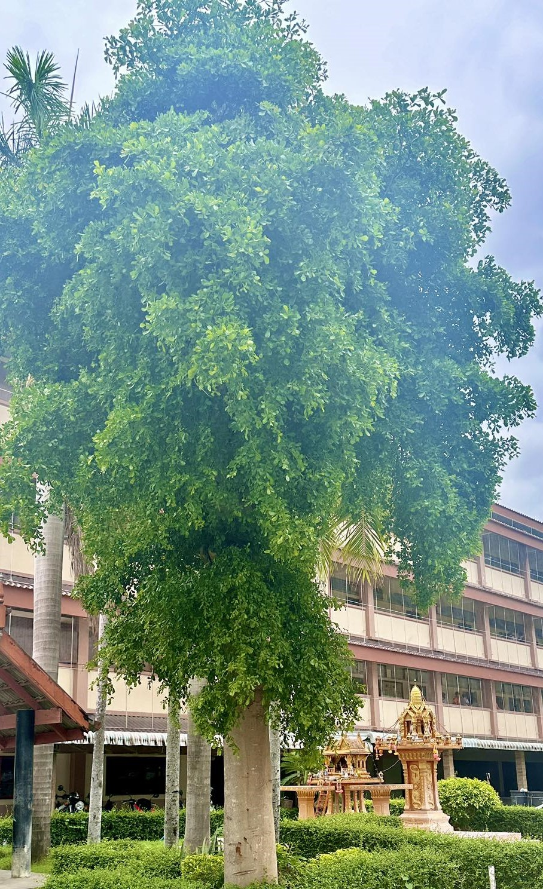
ต้นมั่งมี
ต้นมั่งมี นอกจากชื่อที่เป็นมงคลแล้ว ยังมีประโยชน์อื่นๆ อีกมากมายเลยโดยเฉพาะด้านการจัดสวนและความเชื่อ
ประโยชน์ของต้นมั่งมี
ให้ร่มเงา: ต้นมั่งมีเป็นไม้ยืนต้นขนาดกลางถึงใหญ่ มีทรงพุ่มหนาแน่น จึงให้ร่มเเหงได้ดี เหมาะสำหรับปลูกไว้ในบริเวณบ้านหรือสวน
เสริมมงคล: ตามความเชื่อของคนไทย ต้นมั่งมีเป็นต้นไม้มงคลที่เชื่อว่าจะนำความมั่งคั่ง ร่ำรวย และโชคลาภมาให้แก่ผู้ปลูก
ดูแลรักษาง่าย: ต้นมั่งมีเป็นพืชที่แข็งแรง ทนทานต่อสภาพแวดล้อม สามารถเจริญเติบโตได้ดีในดินทั่วไปและต้องการน้ำไม่มาก
ช่วยฟอกอากาศ: เช่นเดียวกับต้นไม้ทั่วไป ต้นมั่งมีช่วยดูดซับก๊าซคาร์บอนไดออกไซด์และปล่อยออกซิเจน ทำให้คุณภาพอากาศดีขึ้น
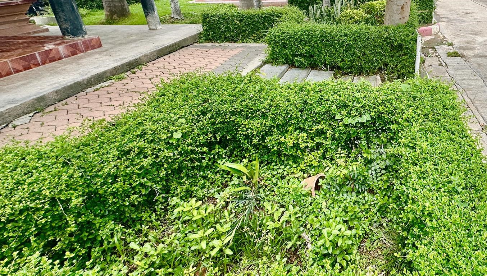
ชาดัด หรือ ชาฮกเกี้ยน
ชาดัด หรือ ชาฮกเกี้ยน เป็นไม้พุ่มขนาดเล็กที่มีประโยชน์หลากหลาย นอกจากจะใช้เป็นไม้ประดับตกแต่งสวนแล้ว ยังมีสรรพคุณทางยาและประโยชน์อื่นๆ อีกมากมาย
สรรพคุณทางยา
แก้ไข้: ชาที่สกัดจากใบชาดัดมีสรรพคุณในการลดไข้
บรรเทาอาการเจ็บคอ: ช่วยลดอาการระคายเคืองและบรรเทาอาการเจ็บคอ
ช่วยย่อยอาหาร: ช่วยกระตุ้นการทำงานของระบบย่อยอาหาร ทำให้รู้สึกสบายท้อง
ลดอาการอักเสบ: ช่วยลดอาการอักเสบต่างๆ ในร่างกาย
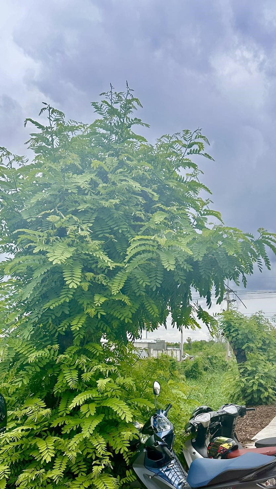
ต้นนนทรี
ต้นนนทรี นอกจากจะเป็นไม้ประดับที่ให้ร่มเงาและดอกสวยงามแล้ว ยังมีประโยชน์อื่นๆ อีกมากมาย
สรรพคุณทางยา:
เปลือกต้น: ใช้แก้ท้องเสีย แก้ตะคริว แก้กล้ามเนื้ออักเสบ
ยอดอ่อน: ใช้เป็นยาทาแก้โรคผิวหนังบางชนิด
เมล็ด: มีสารต้านอนุมูลอิสระ
ประโยชน์อื่นๆ:
ไม้: ใช้ทำเฟอร์นิเจอร์ เครื่องมือทางการเกษตร และส่วนประกอบของบ้าน
ราก: ช่วยยึดดินป้องกันการพังทลาย
ใบ: ใช้เป็นปุ๋ยหมัก
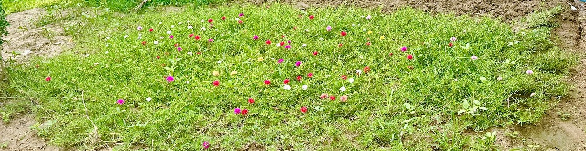
คุณนายตื่นสาย
ต้นคุณนายตื่นสายนั้นมีประโยชน์หลากหลายเลยค่ะ ทั้งในด้านการประดับสวน การใช้ประโยชน์ทางสมุนไพร และการเกษตร โดยสรุปแล้ว ประโยชน์ของต้นคุณนายตื่นสายมีดังนี้
ด้านการประดับ:
ไม้ดอกไม้ประดับ: ดอกคุณนายตื่นสายมีสีสันสดใสหลากหลายชนิด ทำให้เป็นไม้ดอกที่นิยมนำมาปลูกประดับสวน หรือปลูกในกระถาง
พืชคลุมดิน: ช่วยป้องกันการกัดเซาะของดิน และยังช่วยเพิ่มความสวยงามให้กับสวน
ล่อแมลง: ดอกคุณนายตื่นสายสามารถดึงดูดแมลงผสมเกสรได้ดี จึงมักนำมาปลูกร่วมกับพืชผักสวนครัวเพื่อเพิ่มผลผลิต
ด้านสมุนไพร:
แก้เจ็บคอ: ชาจากดอกคุณนายตื่นสายสามารถช่วยบรรเทาอาการเจ็บคอได้
ลดไข้: ช่วยลดไข้และอาการไข้หวัด
ลดอาการอักเสบ: ช่วยลดอาการอักเสบของร่างกาย
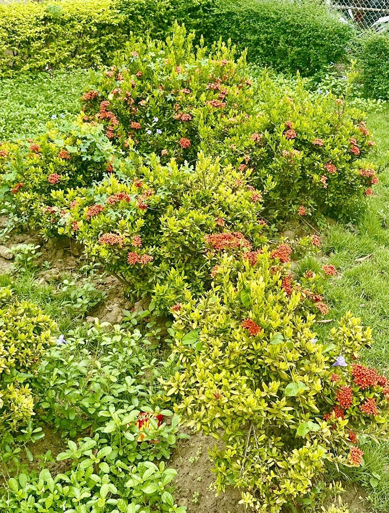
ดอกเข็ม
ดอกเข็ม นอกจากจะเป็นดอกไม้ที่สวยงามและใช้ประดับตกแต่งแล้ว ยังมีสรรพคุณทางยาที่น่าสนใจอีกด้วยค่ะ โดยส่วนต่าง ๆ ของต้นเข็ม ไม่ว่าจะเป็น ราก ใบ ดอก หรือผล ล้วนมีประโยชน์ต่อสุขภาพทั้งสิ้น
สรรพคุณของดอกเข็ม
ราก: มีรสหวาน ช่วยแก้โรคตา เจริญอาหาร
ใบ: ใช้เป็นยาฆ่าพยาธิ
ดอก:
แก้โรคตาแดง ตาแฉะ
ช่วยให้ชุ่มคอ ขับเสมหะ
มีฤทธิ์เย็น ช่วยขับพิษ แก้ร้อนใน
แก้ท้องเสีย อาหารเป็นพิษ
มีสารต้านอนุมูลอิสระ ช่วยต้านมะเร็ง
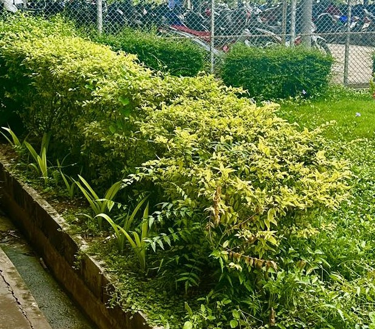
เทียนทอง
ต้นเทียนทอง นอกจากจะมีดอกสีเหลืองอร่ามสวยงามแล้ว ยังมีประโยชน์อีกมากมาย ดังนี้
ประโยชน์ของต้นเทียนทอง
ไม้ประดับ: เป็นที่นิยมปลูกเป็นไม้ประดับ เนื่องจากดอกสวยงาม ใบเขียวชอุ่ม และดูแลรักษาง่าย
ไม้มงคล: เชื่อกันว่าช่วยเรียกทรัพย์ เรียกโชคลาภ ทำให้การค้าขายร่ำรวย และครอบครัวอยู่เย็นเป็นสุข
สมุนไพร: ผลสุกของต้นเทียนทองสามารถนำมาต้มเป็นยาแก้ท้องเสีย
พืชอาหาร: ผลสุกของต้นเทียนทองสามารถรับประทานได้ มีรสชาติหวานอมเปรี้ยว
พืชป้องกันดิน: ช่วยป้องกันการชะล้างพังทลายของดิน
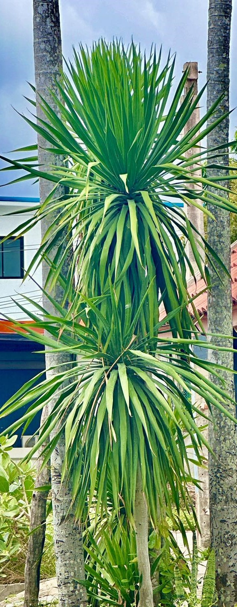
จันผา
ต้นจันผา นอกจากจะมีรูปทรงสวยงามและดอกหอมแล้ว ยังมีประโยชน์อีกมากมาย
ประโยชน์ทางด้านสมุนไพร
แก้ไข้: แก่นจันผาที่มีสีแดง มีสรรพคุณเป็นยาเย็น ช่วยแก้อาการไข้ได้หลากหลายชนิด
ลดไข้: การทดลองในสัตว์พบว่า สารสกัดจากจันผาด้วยน้ำ มีฤทธิ์ช่วยลดไข้
บำรุงผิว: ส่วนของลำต้นที่เกิดบากแผลนานเข้าจนเปลี่ยนเป็นเนื้อสีน้ำตาลแดง สามารถนำมาใช้เป็นส่วนประกอบในการปรุงน้ำยาอุทัย ช่วยบำรุงผิวพรรณ
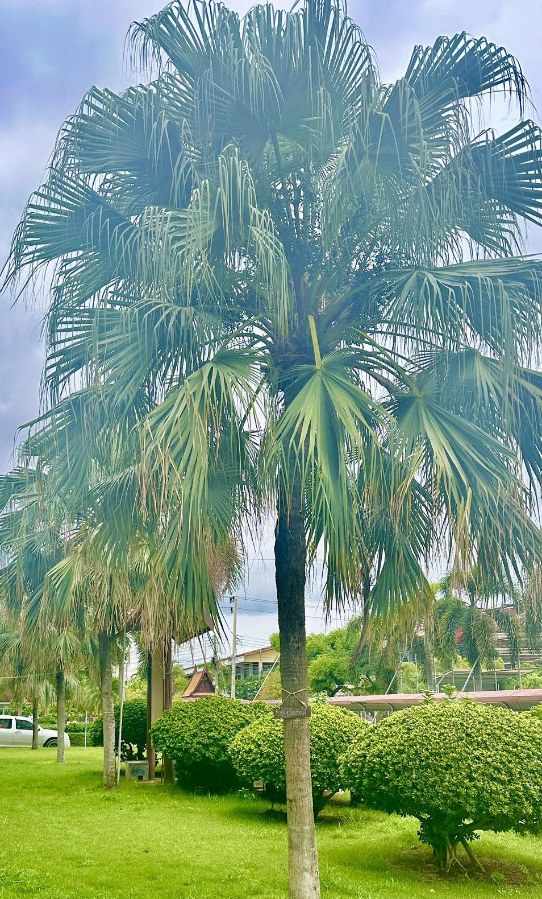
ปาล์มจีน
ต้นปาล์มจีน นอกจากจะเป็นไม้ประดับที่ให้ความสวยงามแล้ว ยังมีประโยชน์อีกมากมาย ดังนี้
ประโยชน์โดยทั่วไป:
ไม้ประดับ: ปลูกเป็นไม้ประดับในสวน หรือริมทาง เนื่องจากมีรูปทรงสวยงาม ใบเขียวชอุ่ม และสามารถทนต่อสภาพอากาศได้หลากหลาย
ให้ร่มเงา: ใบปาล์มจีนแผ่กว้าง ทำให้ให้ร่มเงาได้ดี เหมาะสำหรับปลูกในบริเวณที่ต้องการความร่มรื่น
ช่วยปรับปรุงคุณภาพอากาศ: ช่วยดูดซับก๊าซคาร์บอนไดออกไซด์และปล่อยออกซิเจน ทำให้คุณภาพอากาศดีขึ้น
ป้องกันดิน: รากของปาล์มจีนช่วยยึดดิน ทำให้ดินไม่ถูกชะล้าง
ใช้ในงานหัตถกรรม: ใบของปาล์มจีนสามารถนำมาจักสานทำเป็นผลิตภัณฑ์ต่างๆ เช่น หมวก กระเป๋า และเครื่องจักสานอื่นๆ
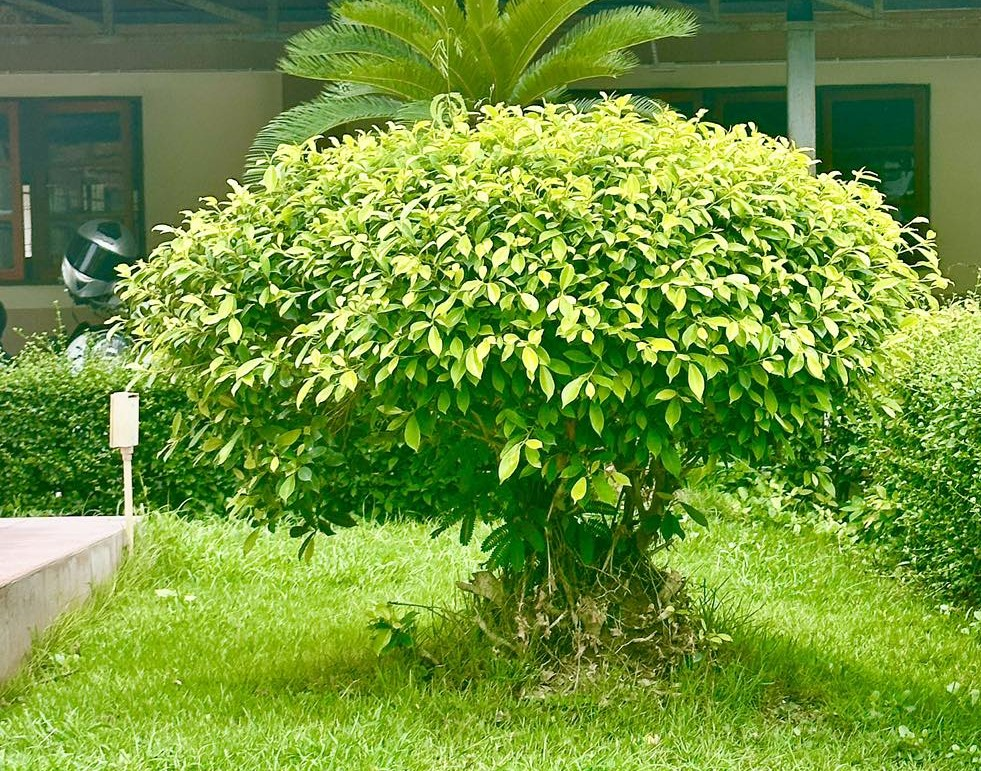
ไทรทอง
ต้นไทรทอง นอกจากจะเป็นไม้ให้ร่มเงาและมีคุณค่าทางด้านความสวยงามแล้ว ยังมีประโยชน์อื่นๆ อีกมากมาย
ประโยชน์ทั่วไป
ให้ร่มเงา: ต้นไทรทองเป็นไม้ยืนต้นขนาดใหญ่ มีเรือนยอดแผ่กว้าง จึงให้ร่มเงาได้เป็นอย่างดี เหมาะสำหรับปลูกเป็นไม้ประดับสวนหรือริมทาง
บำรุงดิน: รากของต้นไทรทองจะช่วยยึดหน้าดินและป้องกันการชะล้างของดิน ช่วยเพิ่มความอุดมสมบูรณ์ให้กับดิน
เป็นที่อยู่อาศัยของสัตว์: ร่มเงาและโพรงของต้นไทรทองเป็นที่อยู่อาศัยของสัตว์ต่างๆ เช่น นก สัตว์เลื้อยคลาน และแมลง
ประโยชน์เฉพาะ
รากอากาศ: รากอากาศของต้นไทรทองมีความแข็งแรง สามารถนำมาใช้ประโยชน์ในการทำเชือกหรือสิ่งของอื่นๆ ได้
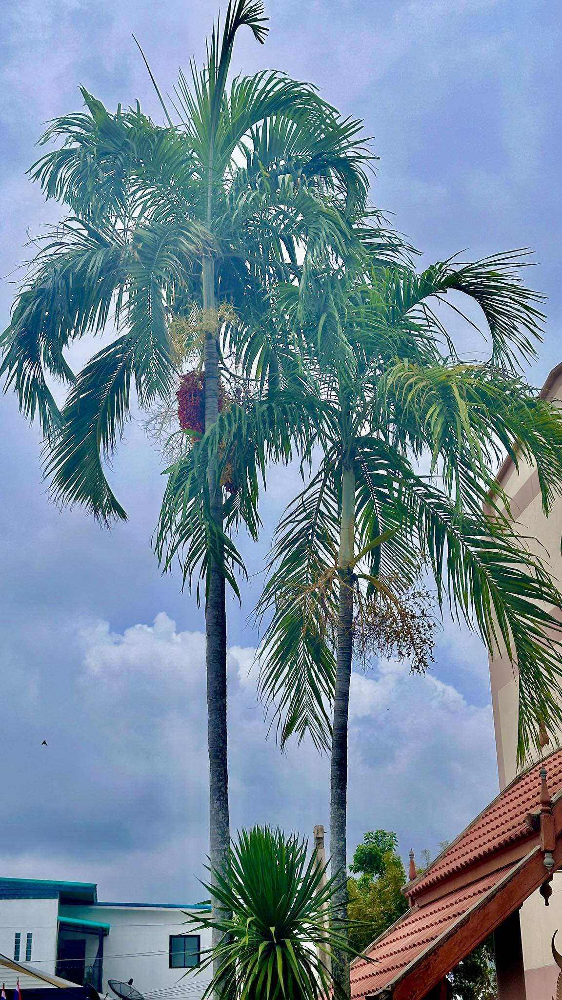
ปาล์มน้ำพุ
ต้นปาล์มน้ำพุ หรือ Carpentaria Palm นั้นมีประโยชน์หลักๆ คือการใช้เป็นไม้ประดับค่ะ เนื่องจากมีรูปทรงที่สวยงาม ใบเรียงตัวเป็นระเบียบ ให้ความรู้สึกโปร่งโล่ง และยังทนทานต่อสภาพแวดล้อมได้ดีอีกด้วย
ประโยชน์โดยละเอียดของต้นปาล์มน้ำพุ:
ไม้ประดับ: นิยมปลูกประดับในสวน หรือตกแต่งสวน ปลูกตามแนวอาคารเพื่อเป็นขอบเขต หรือปลูกเป็นกลุ่มเพื่อสร้างความสวยงามให้กับพื้นที่
ให้ร่มเงา: ใบของปาล์มน้ำพุค่อนข้างหนาแน่น สามารถให้ร่มเงาได้เป็นอย่างดี เหมาะสำหรับปลูกในบริเวณที่ต้องการความร่มเย็น
ปรับปรุงสภาพแวดล้อม: ช่วยดูดซับก๊าซคาร์บอนไดออกไซด์และปล่อยออกซิเจน ทำให้คุณภาพอากาศดีขึ้น
ป้องกันการกัดเซาะ: รากของปาล์มน้ำพุช่วยยึดดิน ทำให้ดินไม่ถูกชะล้าง
สร้างความเป็นส่วนตัว: เมื่อปลูกเป็นแนวรั้ว สามารถช่วยบังสายตาจากภายนอกได้
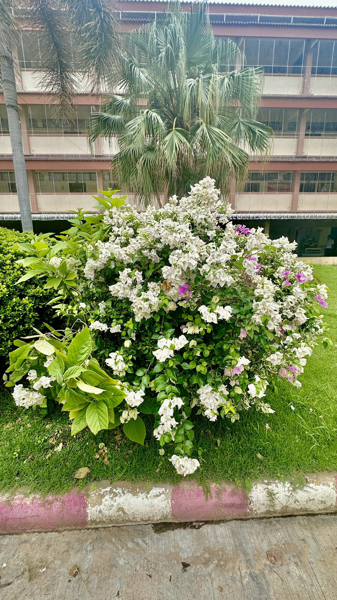
เฟื่องฟ้า
ต้นเฟื่องฟ้า นอกจากจะเป็นไม้ประดับที่มีสีสันสวยงามแล้ว ยังมีประโยชน์อีกมากมายเลย ทั้งด้านสุขภาพและการใช้ประโยชน์อื่นๆ
สรรพคุณทางยาของดอกเฟื่องฟ้า:
บำรุงหัวใจและระบบขับถ่าย: ช่วยให้ระบบต่างๆ ในร่างกายทำงานได้ดีขึ้น
แก้ประจำเดือนมาไม่ปกติ: ช่วยปรับสมดุลฮอร์โมนในร่างกายของสตรี
ลดอาการอักเสบ: ช่วยบรรเทาอาการปวดเมื่อยตามร่างกาย
ช่วยสมานแผล: ช่วยให้แผลหายเร็วขึ้น
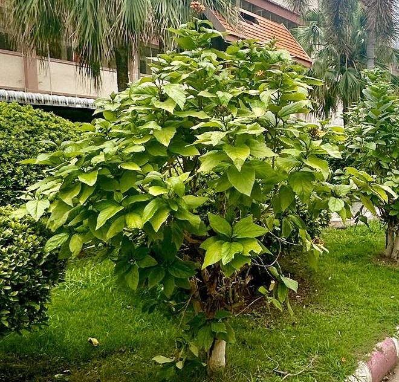
ต้นแสงจันทร์
ต้นแสงจันทร์ นอกจากจะเป็นไม้ประดับที่มีใบสีเขียวอ่อนสวยงามแล้ว ยังมีประโยชน์อื่นๆ อีกมากมาย ดังนี้
ประโยชน์ทางสมุนไพร:
ใบ: ใช้ขับปัสสาวะ ตำพอกแก้ปวด แก้อักเสบ และฟกช้ำ
ราก: ใช้เป็นยาสมุนไพรในการรักษาโรคบางชนิด (ควรปรึกษาแพทย์ก่อนใช้)
ประโยชน์อื่นๆ:
ใบนำมาประกอบอาหารได้: ใบอ่อนของต้นแสงจันทร์สามารถนำมาปรุงอาหารได้ เช่น ลวกจิ้มน้ำพริก หรือใส่ในแกง
เป็นไม้มงคล: เชื่อกันว่าต้นแสงจันทร์เป็นไม้มงคลที่นำความเจริญรุ่งเรืองมาสู่บ้านเรือน
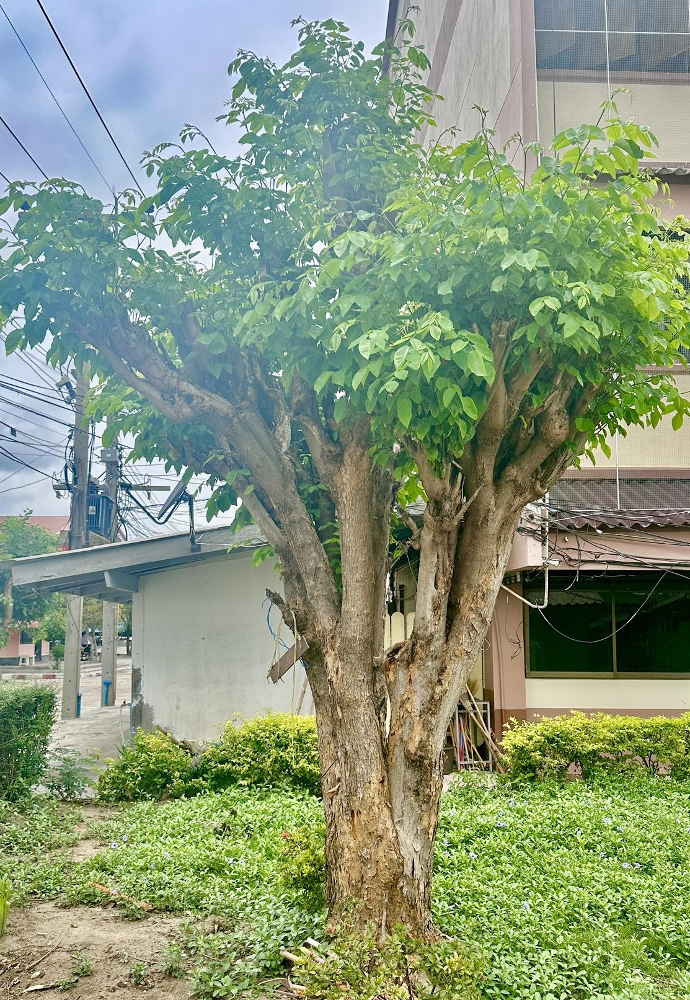
ต้นตะคร้อ
ต้นตะคร้อเป็นต้นไม้ที่มีประโยชน์หลากหลายเลยค่ะ ทั้งส่วนต่างๆ ของต้นไม้ ตั้งแต่ราก ใบ ผล และเมล็ด ล้วนมีสรรพคุณทางยาและประโยชน์ใช้สอยต่างๆ มากมาย
สรรพคุณทางยาของต้นตะคร้อ:
ราก: ช่วยแก้ไข้ แก้ปวดเมื่อยตามร่างกาย บำรุงกำลัง
ใบ: ช่วยแก้ไข้ แก้ท้องเสีย แก้บิด ช่วยสมานแผล
ผล: ช่วยแก้อาการไอ แก้เจ็บคอ บรรเทาอาการร้อนใน
เมล็ด: ช่วยบำรุงผม ทำให้ผมดกดำ